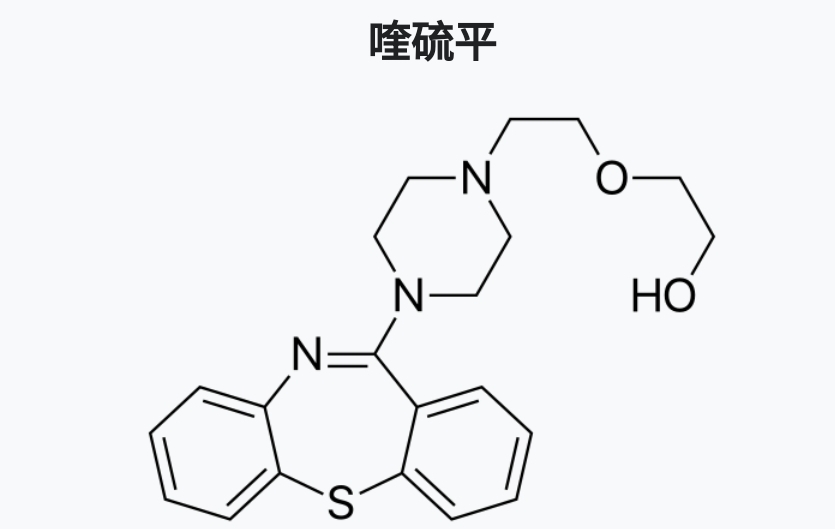

幻觉的严重程度就会大幅度减轻，服用者随后可能感到疲劳，甚至进入睡眠状态。然而，并非所有致幻剂的药效都会被完全解除，生理性的副作用(如血压，心率变化)可能持续。其效果也因人而异。一些减害网站建议致幻剂使用者常备喹硫平之类的下机药，以备不时之需。
参考资料:
下机药 https://t.co/QcB0pakNJY

参考资料:
下机药 https://t.co/QcB0pakNJY

每日💊科普(day3)喹硫平
喹硫平属于非典型抗精神病药，主要通过拮抗5HT-2A受体和D2受体，治疗双相障碍和精神分裂症。无娱乐价值。
因其机理与血清素致幻剂(如LSD,DMT)的机理抵消，喹硫平被致幻剂使用者称为血清素致幻剂专用的“下机药”。当他们想要结束bad trip时，就会服用100mg的喹硫平。30分钟内， https://t.co/PUPoTjhVXZ
喹硫平属于非典型抗精神病药，主要通过拮抗5HT-2A受体和D2受体，治疗双相障碍和精神分裂症。无娱乐价值。
因其机理与血清素致幻剂(如LSD,DMT)的机理抵消，喹硫平被致幻剂使用者称为血清素致幻剂专用的“下机药”。当他们想要结束bad trip时，就会服用100mg的喹硫平。30分钟内， https://t.co/PUPoTjhVXZ